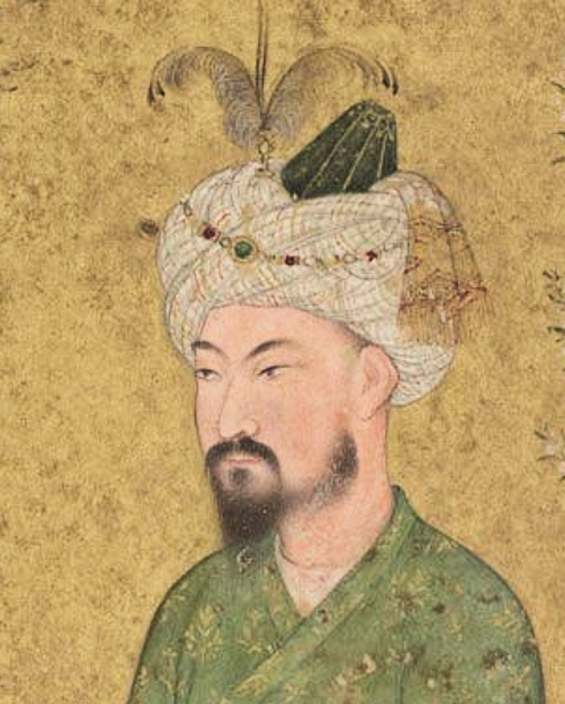

1 The Prince Who Would Not Go HomeBabur's Panipat victory and refusal to return to Kabul set a founding paradox: a dynasty that almost wasn't. Humayun's catastrophic loss and Persian exile transplant Safavid aesthetics and a pluralist education into Akbar's infancy. Back in Agra, the regency of Maham Anaga and Bairam Khan shows that the throne is already held up by factions and foster mothers. Against this, Ghiyas Beg's arrival prefigures the Persianate elite that will supply wazirs and empresses.